Glossaire
Afin de guider ceux qui souhaitent s'informer...
Empire moghol
Grande puissance musulmane ayant régné sur une grande partie du sous-continent indien du XVIe au XIXe siècle, responsable de la construction du Taj Mahal sous l’empereur Shah Jahan.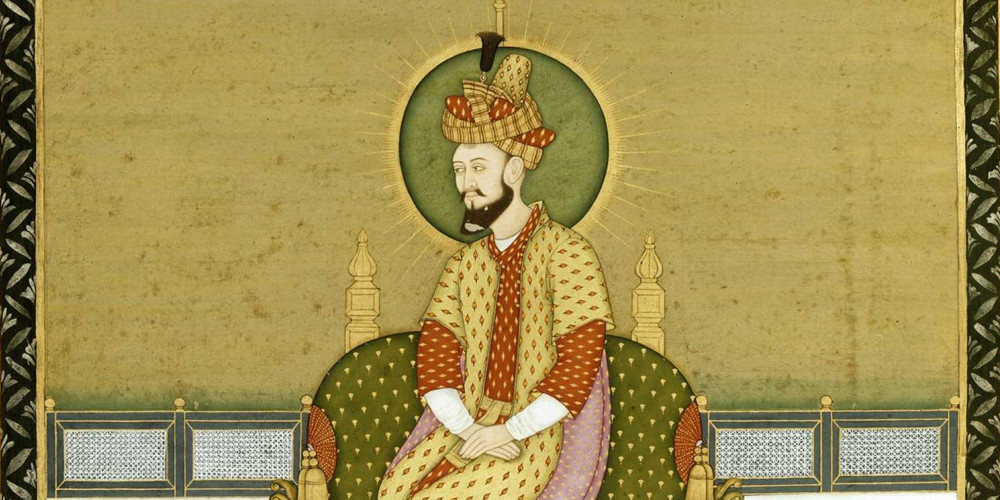
Marbre
Roche noble et précieuse utilisée dans la construction du Taj Mahal, notamment le marbre blanc du Rajasthan, célèbre pour sa pureté et sa translucidité.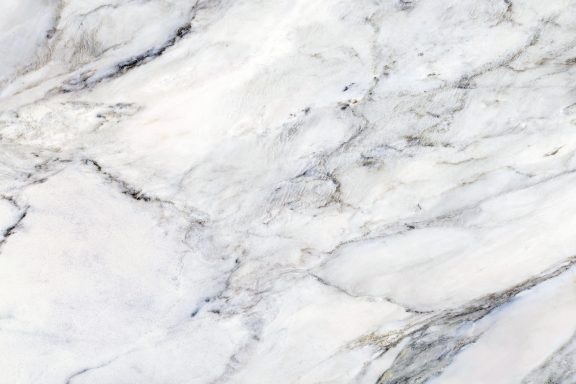
Calligraphie
Art d'écrire de façon esthétique. Le Taj Mahal est orné d'inscriptions coraniques réalisées en marbre noir, symbolisant l'entrée dans un lieu sacré.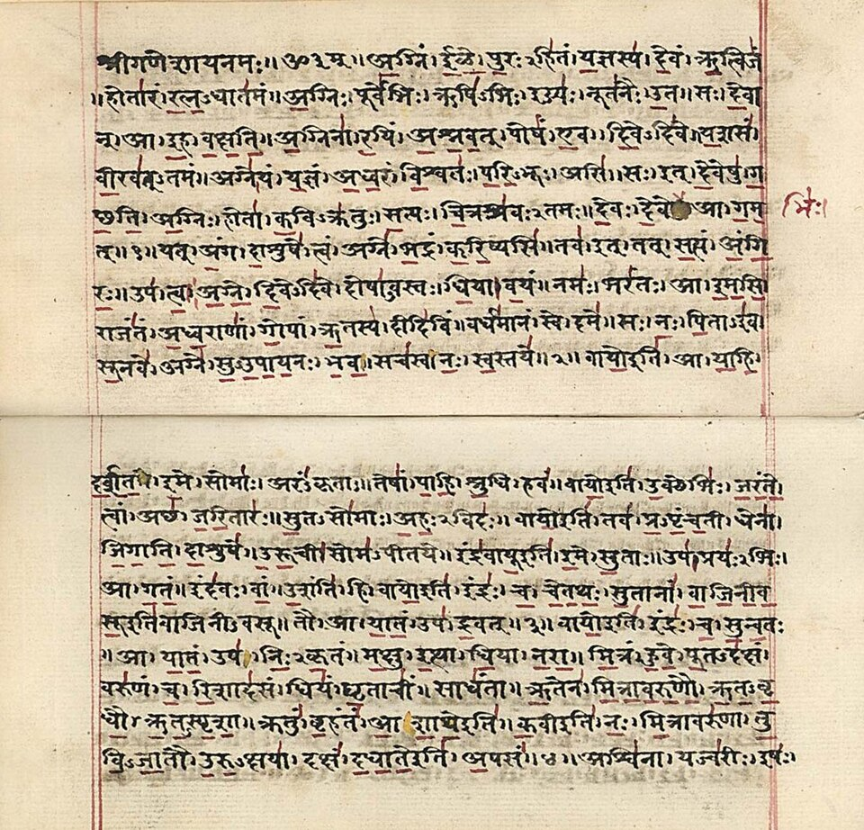
Minarets
Tours élancées traditionnellement associées aux mosquées. Les quatre minarets du Taj Mahal encadrent le mausolée, à la fois décoratifs et structurés pour tomber vers l'extérieur en cas de séisme.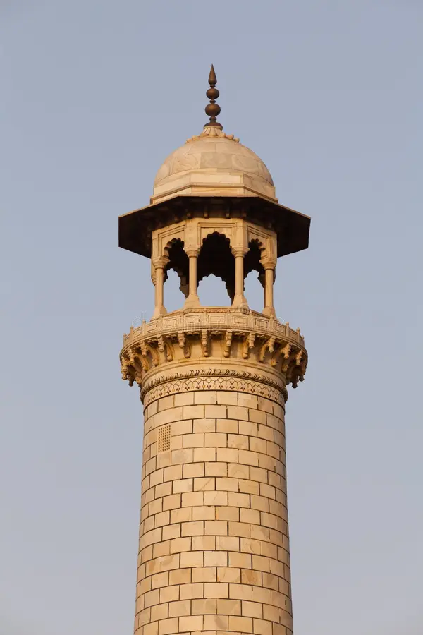
Cenotaphe
Tombeau symbolique vide, souvent placé au-dessus de la vraie tombe. Les sépultures de Mumtaz Mahal et de Shah Jahan dans le Taj Mahal sont surmontées de cénotaphes richement décorés.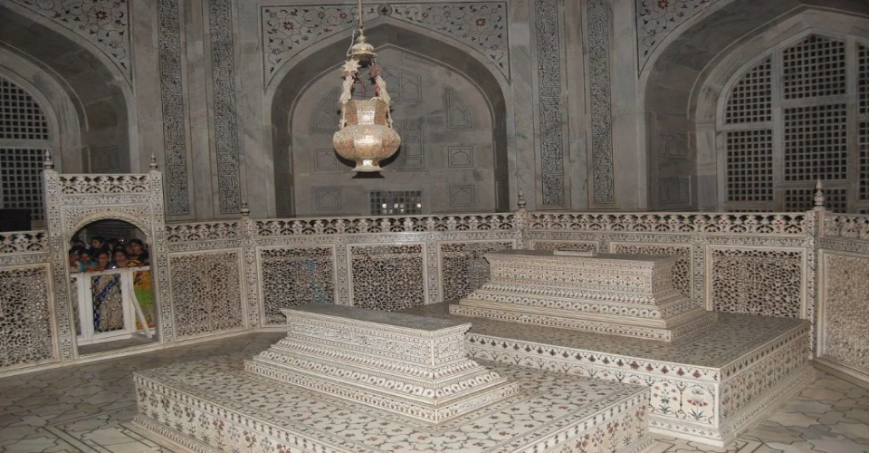
Multiani mitti
Argile naturelle aussi appelée « terre de Fuller », utilisée traditionnellement dans la région de Multan (actuel Pakistan) pour ses propriétés purifiantes et cosmétiques, et parfois pour des travaux de finition dans l'architecture moghole.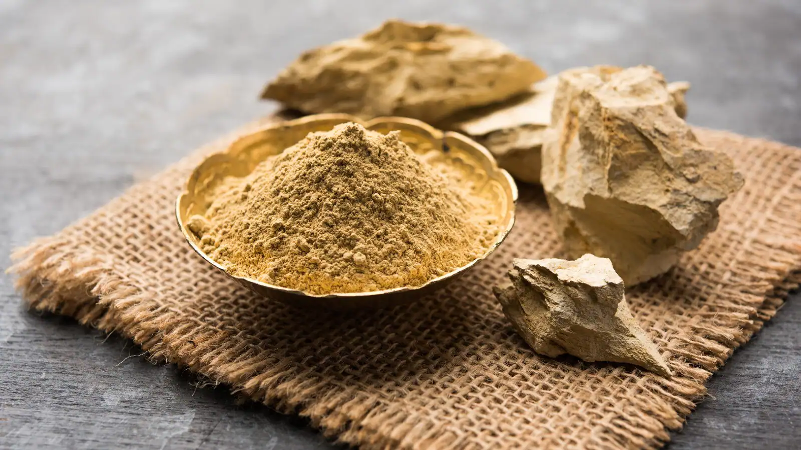
Pietra dura
Technique d'incrustation de pierres semi-précieuses dans le marbre, utilisée dans les motifs floraux décorant le Taj Mahal. Importée d'Italie, elle symbolise le raffinement artistique de l'Empire moghol.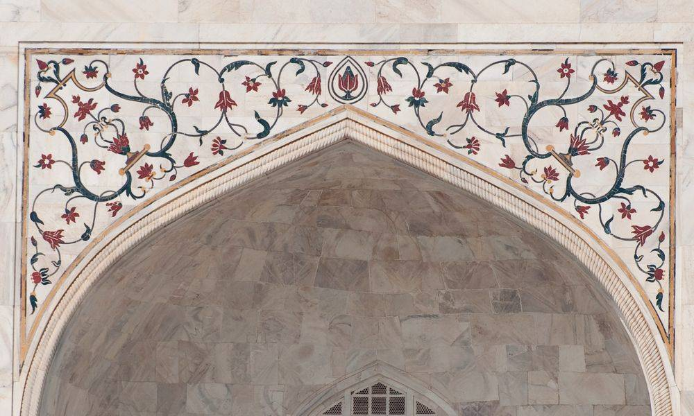
Qubba
Dôme, souvent central, symbole de l'élévation spirituelle. Le dôme principal du Taj Mahal est l'un des plus célèbres au monde par sa forme harmonieuse.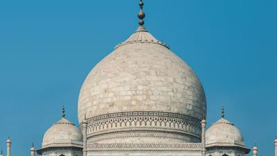
Mihrab
Niche murale indiquant la direction de La Mecque. Dans la mosquée attenante au Taj Mahal, on trouve un mihrab orienté pour la prière.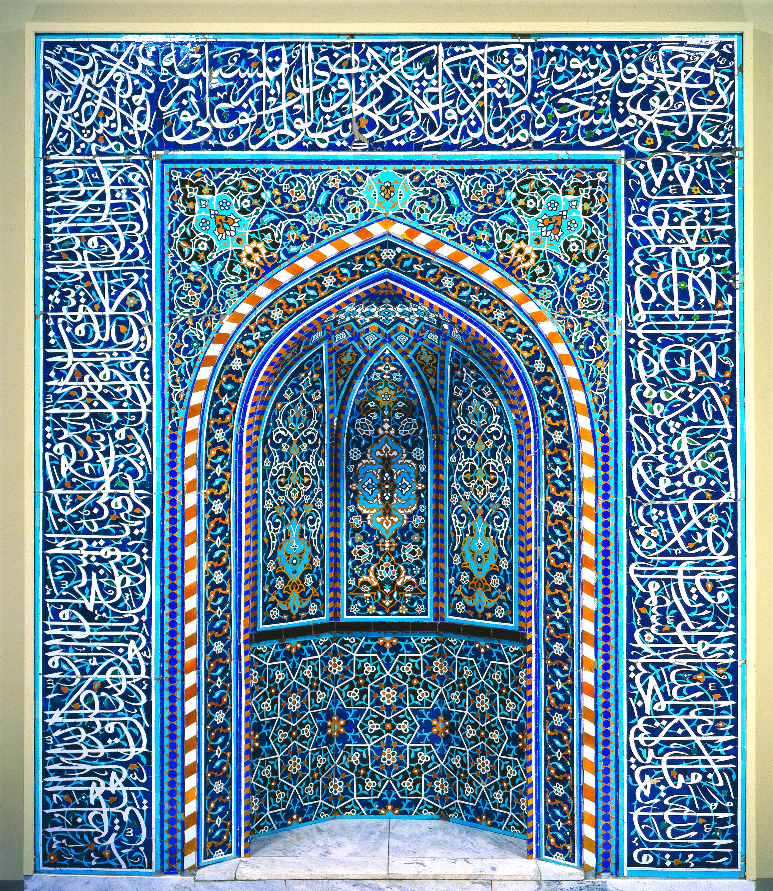
Charbagh
Jardin moghol divisé en quatre parties selon une symbolique paradisiaque, structurant l'ensemble paysager autour du Taj Mahal.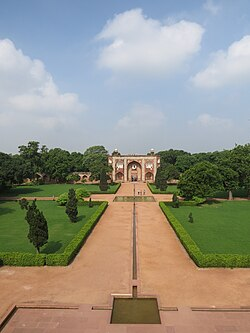
Chhatri
Petits pavillons en forme de dôme, typiques de l'architecture indo-islamique. On en retrouve plusieurs sur le toit du Taj Mahal, contribuant à son élégante silhouette.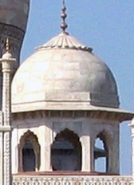
Iwan
Grande arche voûtée encadrant une ouverture, élément central dans l'architecture islamique. Le Taj Mahal en présente plusieurs sur ses façades.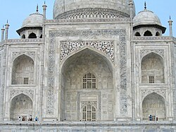